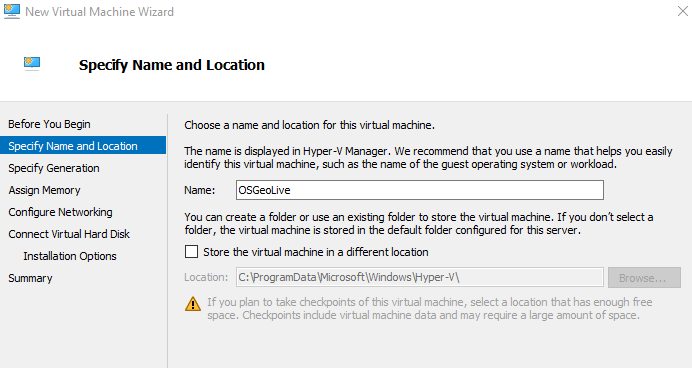
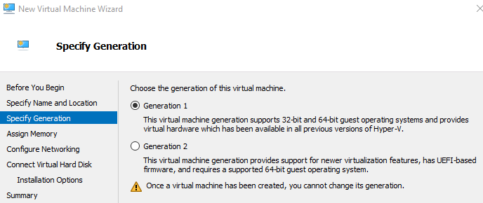
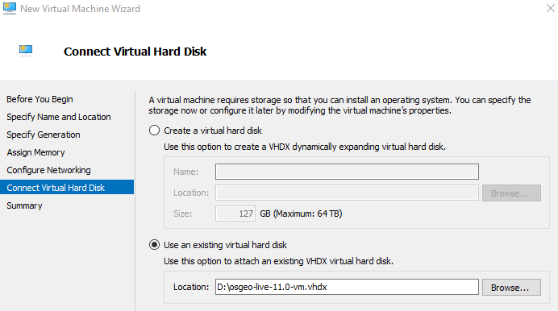

OSGeoLive Quickstart for Running in a Hyper-V Virtual Machine¶
This Quick Start describes how to run OSGeoLive using Hyper-V, Microsoft’s virtualisation software. For other methods, follow links from the “See Also” section below. Hyper-V is available on both Windows Server, and Windows 10 Professional - it is not part of Windows 10 Home.
The advantages of using a virtual machine are the same as those outlined at OSGeoLive Quickstart for Running in a Virtual Machine. Unfortunately Virtual Box and Hyper-V cannot be run simultaneously. This leaves 2 options - disabling the Hyper-V feature, or configuring a new Hyper-V machine to run OSGeoLive. A free tool hypervswitch can be used to quickly enable and disable Hyper-V - however it still requires a reboot each time the setting is changed. The rest of this page documents how to configure OSGeoLive to run on Hyper-V.
System Requirements¶
Hyper-V requirements can be found here.
This link also provides information on checking if your machine is compatible using the systeminfo command. In summary the host machine
needs to have the following hardware requirements:
- RAM: 4 GB minimum
- 64-bit Processor
Downloads and Virtual Machine Conversion¶
Download the OSGeoLive VirtualBox virtual hard disk (vmdk) by following the links on live.osgeo.org. Once downloaded unzip the downloaded file (using 7zip ).
The virtual machine image format for Hyper-V differs from the VirtualBox download. The file therefore has to be converted from vmdk to
vhdx. There are currently two conversion options available.
StarWind V2V Converter¶
Use the StarWind V2V Converter program. This has a simple user interface allowing you to select the
osgeo-live-XX.X-vm.vmdk file and convert to a Microsoft VHDX image.
Microsoft Virtual Machine Converter 3.0¶
The second more complicated option is as follows.
- Download the Microsoft Virtual Machine Converter 3.0 and install.
- Download the DS File Ops Kit and unzip.
- Open PowerShell (with administrator rights)
- Run the following command to get the disk descriptor from the OSGeoLive vmdk. This saves the disk description to the “descriptor1.txt” file.
Open this in a text editor (such as Notepad) and comment out the following lines using hashes (this metadata is VirtualBox specific and is not recognised by the converter):
#ddb.uuid.image="0247ca9d-f9aa-4910-9e8c-1c14d83a7749" #ddb.uuid.parent="00000000-0000-0000-0000-000000000000" #ddb.uuid.modification="81a1d704-3e4a-443d-a5ca-2fd085ba086a" #ddb.uuid.parentmodification="00000000-0000-0000-0000-000000000000" #ddb.comment=""
Run the following command to insert the disk descriptor back into the
vmdkfile:D:\tools\dsfi.exe .\osgeo-live-11.0-vm.vmdk 512 1024 descriptor1.txt
Note
Failing to do the above steps will result in the error “ConvertTo-MvmcVirtualHardDisk : The entry 0247ca9d-f9aa-4910-9e8c-1c14d83a7749 is not a supported disk database entry for the descriptor.”
Finally run the conversion process:
Import-Module "C:\Program Files\Microsoft Virtual Machine Converter\MvmcCmdlet.psd1" cd D:\osgeo-live-11.0-vm ConvertTo-MvmcVirtualHardDisk -SourceLiteralPath .\osgeo-live-11.0-vm.vmdk -VhdFormat Vhdx
How-To¶
This guide assumes Hyper-V is already installed and enabled - if this is not the case the more typical approach using Virtual Box outlined at OSGeoLive Quickstart for Running in a Virtual Machine can be used.
Create a Virtual Machine
Start the Hyper-V Manager application and under Actions select New > Virtual Machine, and then Next. Then enter an appropriate name for the virtual machine.
Select “Generation 1” from the Specify Generation options.
When assigning memory, you can select “Use Dynamic Memory for this virtual machine”.
If you require the virtual machine to have Internet access you will need to set this up this up on the “Configure Networking” screen.
On the “Connect Virtual Hard Disk”, select “Use an existing virtual hard disk” and select the
.vhdxfile you unzipped earlier.

Running the Virtual Machine
- Select the virtual machine from the Virtual Machines list
- Right-click and select “Connect”. You will be prompted to start the machine, and a new “Virtual Machine Connection” window will open.